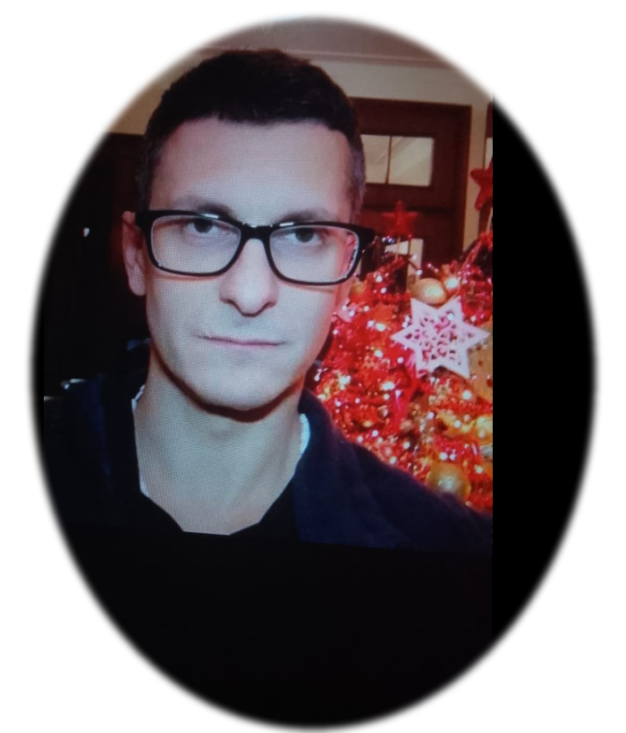
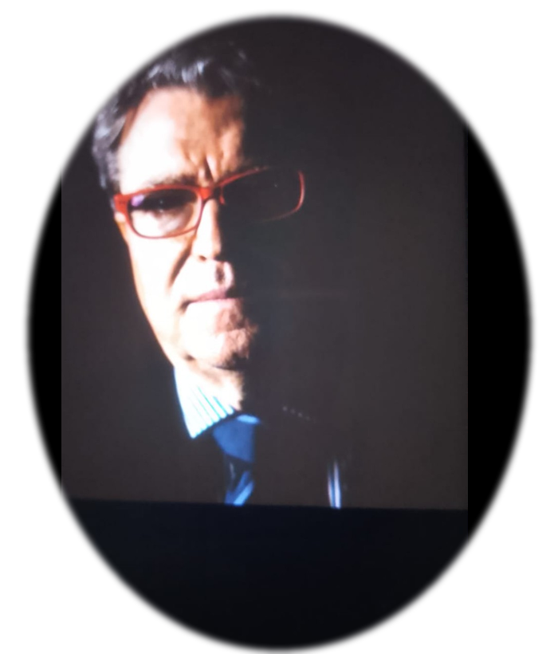
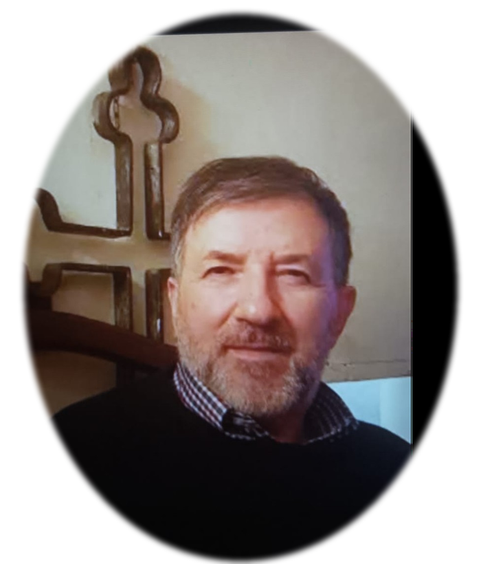
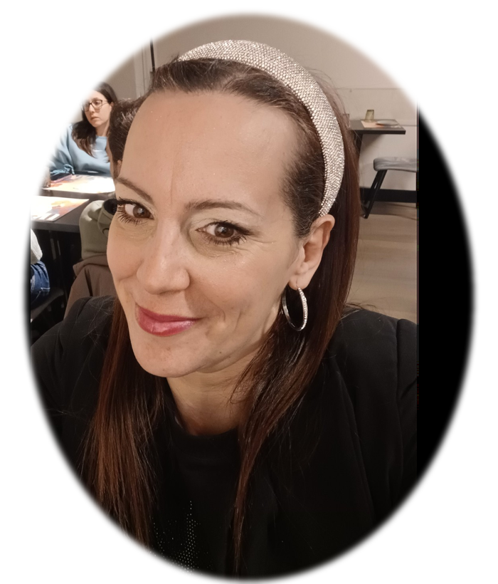
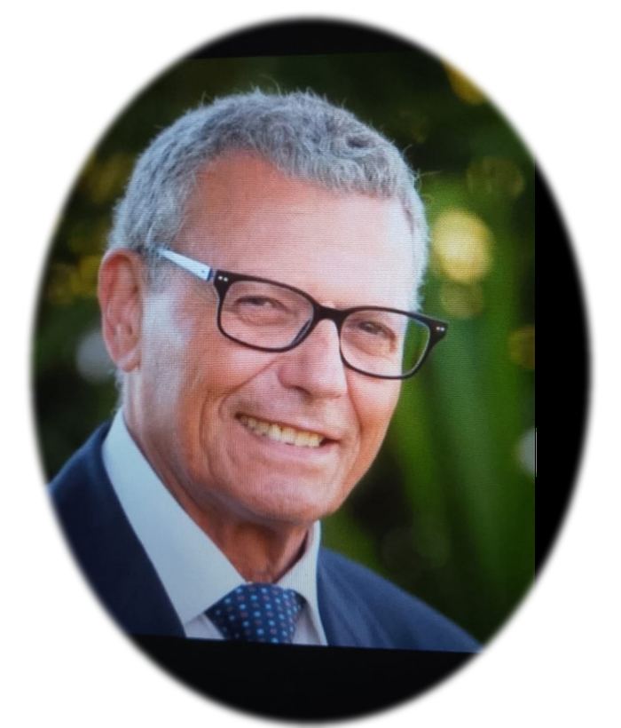
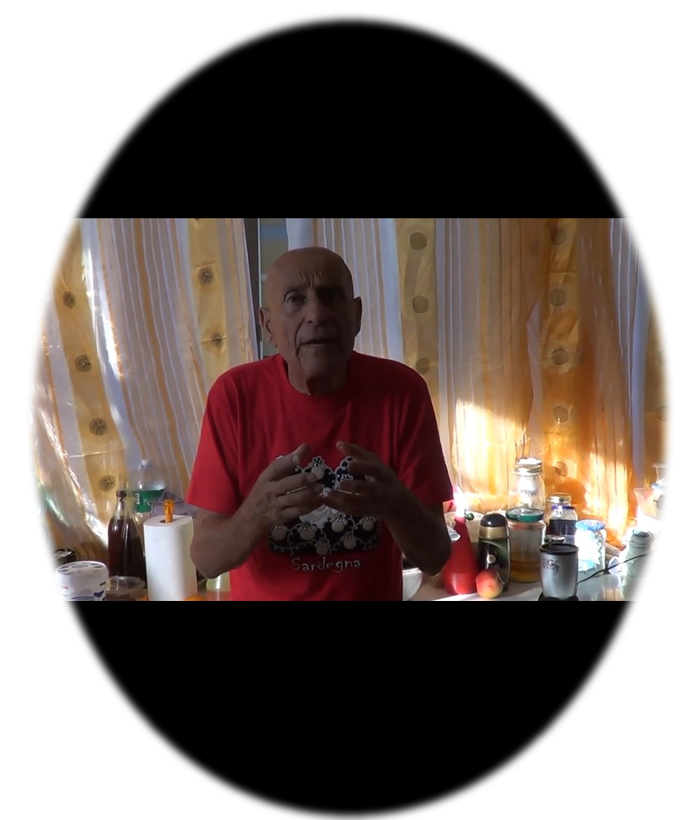
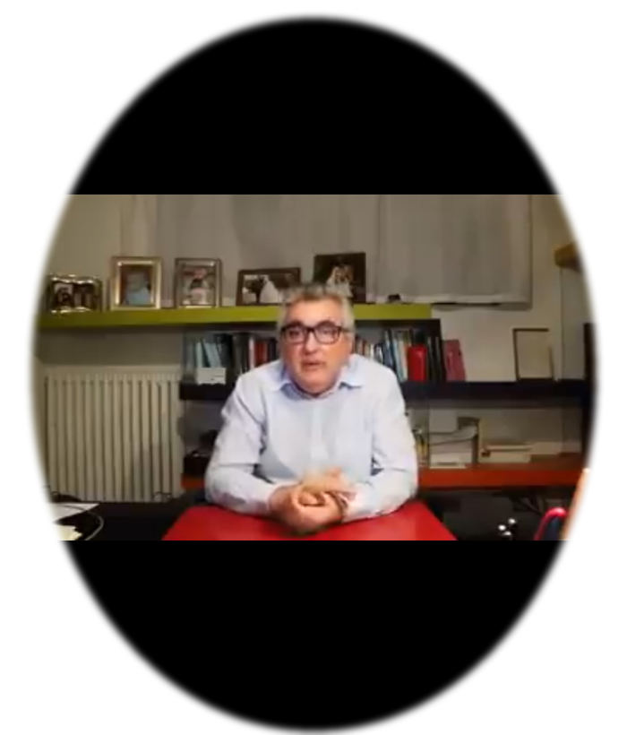
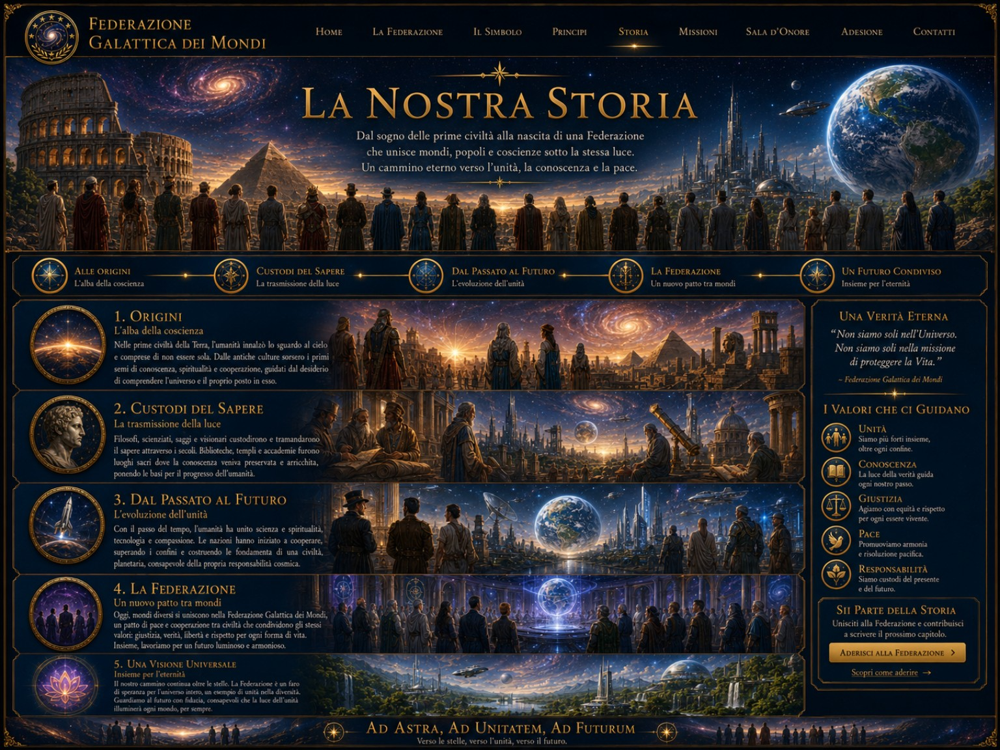

Alberto Caccialanza
Membro onorario in missione
 Federazione Galattica dei Mondi
Federazione Galattica dei MondiFotografie originali: i volti non sono stati ricreati né modificati; l’intervento riguarda ritaglio, isolamento dello sfondo e impaginazione.

Membro onorario in missione

Membro onorario in missione

Membro onorario

Coordinatrice

Membro onorario

Caduto in missione

Caduto in missione
